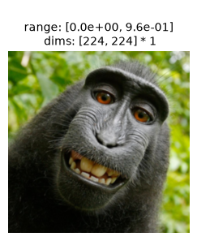
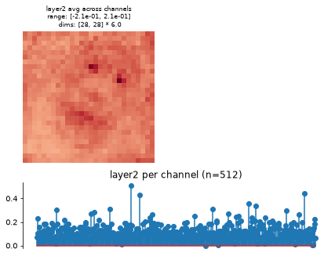

Run this notebook yourself!
Download the script: feature_extractor.py!
Using Deep Neural Networks with plenoptic#
Warning
This notebook requires the optional dependency torchvision, which can be installed with pip.
plenoptic is compatible with any model written in pytorch, including deep neural networks from the model zoos TorchVision and timm. In this notebook, we’ll show how to adapt a deep net from these two packages for use with plenoptic, recreating some ResNet50 metamers shown in Feather et al., 2023, figure 2e.
import matplotlib.pyplot as plt
import torch
import plenoptic as po
# this notebook uses torchvision, which is an optional dependency.
# if this fails, install torchvision in your plenoptic environment
# and restart the notebook kernel.
try:
import torchvision
except ModuleNotFoundError:
raise ModuleNotFoundError(
"optional dependency torchvision not found!"
" please install it in your plenoptic environment "
"and restart the notebook kernel"
)
dtype = torch.float32
DEVICE = torch.device("cuda" if torch.cuda.is_available() else "cpu")
%load_ext autoreload
%autoreload 2
# so that relative sizes of axes created by po.plot.imshow and others look right
plt.rcParams["figure.dpi"] = 72
# set seed for reproducibility
po.set_seed(0)
This notebook retrieves cached synthesis results
The example metamer shown in this notebook takes about 15 minutes to synthesize on a GPU. Thus, instead of performing synthesis in this notebook, we have cached the result of it online and only download them for investigation.
Initializing the model#
When synthesizing images for deep nets, as in Feather et al., 2023, it is common to pick a specific intermediate layer whose representation we wish to use. torchvision contains a “feature extractor” to grab activity from intermediate layers, and plenoptic’s plenoptic.models.FeatureExtractorModel is a small wrapper to simplify this process.
target_layer = "layer2"
target_layer = "layer3"
target_layer = "layer4"
In the rest of this section, we show how to initialize a plenoptic-compatible model using the weights from either the TorchVision or timm model zoos; their behavior after this section is the same.
First, we download the model weights for ResNet50 trained on ImageNet-1K and initialize the torchvision / timm model.
weights = torchvision.models.ResNet50_Weights.IMAGENET1K_V1
deepnet = torchvision.models.resnet50(weights=weights)
Note that to run this cell (and the following timm cells), you must install timm as well (pip install timm)!
deepnet = timm.create_model("timm/resnet50.tv_in1k", pretrained=True)
Next, we ensure that our model is in evaluation mode. Many models, including ResNet50, behave differently when in training and evaluation mode. In plenoptic, models are fixed and so we want the evaluation behavior:
deepnet.eval()
Next, we need to specify the layer to target. If we look at the ResNet50 metamers in Figure 2e from Feather et al., 2023, we can see an interesting progression in layers 2 through 4: the layer 2 metamer looks almost identical to the target image, the layer 3 metamer starts to add RGB noise, and the layer 4 is almost completely unidentifiable, looking almost completely like random RGB noise.
Let’s start with "layer3", but note the metamer synthesis procedure in this notebook works with any of "layer2", "layer3", or "layer4" (and possibly others, they just haven’t been tested).
How do I know what layers I can use?
You can view possible layer names with torchvision.models.feature_extraction.get_graph_node_names. (For more details on the node naming conventions, please see the About Node Names heading in the torchvision documentation.)
from torchvision.models import feature_extraction
# this function returns two lists, the first for training mode, the second for eval mode
feature_extraction.get_graph_node_names(deepnet)[1]
And note that you can specify multiple layers!
Next, we grab the preprocessing transform from the model. As the torchvision docs explain it (quoting version 0.27):
Before using the pre-trained models, one must preprocess the image (resize with right resolution/interpolation, apply inference transforms, rescale the values etc). There is no standard way to do this as it depends on how a given model was trained. It can vary across model families, variants or even weight versions. Using the correct preprocessing method is critical and failing to do so may lead to decreased accuracy or incorrect outputs.
For models trained on ImageNet, this preprocessing consists of two steps: resizing to a height and width of 224 pixels and normalizing the color channels (subtracting means and dividing by standard deviations). Following Feather et al., 2023, we recommend including the normalization step in the model for metamer synthesis, but handling the image resizing externally. We demonstrate how to do so below.
Let’s grab the normalizing transform and then initialize our plenoptic model:
In torchvision, the transform is a single torch Module which we cannot easily subdivide, so we create a separate normalization transform, which we pass to FeatureExtractorModel:
transform = weights.transforms()
norm = torchvision.transforms.Normalize(transform.mean, transform.std)
print(transform)
ImageClassification(
crop_size=[224]
resize_size=[256]
mean=[0.485, 0.456, 0.406]
std=[0.229, 0.224, 0.225]
interpolation=InterpolationMode.BILINEAR
)
In timm, the transform can be indexed into, so we can explicitly grab the normalization:
transform = create_transform(
**resolve_data_config(deepnet.pretrained_cfg, model=deepnet)
)
norm = transform.transforms[-1]
print(transform)
Compose(
Resize(size=256, interpolation=bilinear, max_size=None, antialias=True)
CenterCrop(size=(224, 224))
MaybeToTensor()
Normalize(mean=tensor([0.4850, ...]), std=tensor([0.2290, ...]))
)
Finally, we’ll pass our neural network, target layer, and preprocessing transform to plenoptic’s FeatureExtractorModel:
model = po.models.FeatureExtractorModel(deepnet, target_layer, norm)
Now, let’s prepare the image. The input image needs to be an RGB image with a height and width of 224 pixels. It should probably also be like those found in ImageNet: a single object in the center of the frame that belongs to one of the image classes. We’ll use one of the famous monkey selfies, and resize it appropriately:
img = po.data.macaque()
# here we downsample the original image by a factor of 4 and then lop off the bottom.
# that way, when we take the central 224 pixels in the following block, we end up with a
# decent image.
img = po.process.blur_downsample(img, 2)[..., :-59, :]
How we crop the image down to 224 depends on which model zoo we’re using:
crop = functools.partial(po.process.center_crop, output_size=transform.crop_size[0])
crop = transform.transforms[1]
img = crop(img)
Let’s visualize our resulting image:
po.plot.imshow(img, as_rgb=True);

ResNet50 is trained to classify images into one of 1000 categories. Any metamer of an intermediate layer should preserve this classification, which is the output of the final layer; this is one of the criteria that Feather et al., 2023 check for synthesis success. Let’s examine that classification now, creating a little helper function:
imagenet_categories = np.asarray(weights.meta["categories"])
import urllib
r = urllib.request.urlopen(
"https://raw.githubusercontent.com/pytorch/hub/master/imagenet_classes.txt"
)
imagenet_categories = np.asarray(r.read().decode().split("\n"))
def get_category(image):
image_cat = po.to_numpy(
torch.nn.functional.softmax(deepnet(norm(image)), dim=1).squeeze()
)
return imagenet_categories[image_cat.argmax()]
get_category(img)
guenon
The category, guenon, is an Old World monkey. Though it isn’t the actual species of the monkey in question (a Celebes crested macaque), it’s a reasonable category for it.
Finally, let’s remove the gradient from all model parameters (as models in plenoptic are fixed) and convert everything to float64, for reproducibility:
po.remove_grad(model)
model.to(torch.float64)
img = img.to(torch.float64)
Understanding the model#
Our model object now returns only the activations from our specified layer(s) as a single 2d vector (with the first dimension corresponding to the batch dimension of our input):
rep = model(img)
print(rep)
print(rep.shape)
tensor([[0.0000, 0.0000, 0.0000, ..., 0.0000, 0.0000, 0.3075]],
dtype=torch.float64)
torch.Size([1, 401408])
We have flattened the model representation of the given layer (to support representations from multiple layers simultaneously). If you would like to retrieve the original shape, you can use the convert_to_dict method:
rep = model.convert_to_dict(rep)
print(rep.keys())
print(rep[target_layer].shape)
odict_keys(['layer2'])
torch.Size([1, 512, 28, 28])
FeatureExtractorModel also has a plot_representation method, which creates two subplots. The first plots the average across channel, the average spatial representation, while the second averages across space to get a per-channel average representation:
fig, _ = model.plot_representation(rep)

Synthesizing the metamer#
Warning
We do not perform synthesis in the exact same way as Feather et al., 2023. However, the resulting metamer is qualitatively similar. We note the differences below.
Let us initialize our metamer object using the above image and model. Unlike in Feather et al., 2023, we are using the mean-squared error (the default for Metamer) as our loss function. We also initialize with a sample of uniformly-distributed noise whose values range from 0 to 1, whereas the paper initialized with “a sample from a normal distribution with a standard deviation of 0.05 and a mean of 0.5”. Like that paper, we find better synthesis results if we use a learning-rate scheduler to halve the optimizer’s learning rate regularly, using StepLR (see the following dropdown for more details):
met = po.Metamer(img, model)
met.to(DEVICE)
met.load(
po.data.fetch_data(f"ResNet50-{target_layer}_macaque_metamer.pt"),
map_location=DEVICE,
tensor_equality_atol=1e-6,
)
/home/jenkins/agent/workspace/CCN_neurorse_plenoptic_PR-460/lib/python3.12/site-packages/plenoptic/_synthesize/synthesis.py:562: UserWarning: You will need to call setup() to instantiate scheduler
warnings.warn(
How to run this synthesis manually
These hyperparameters are the ones that work best for this target image. They should make a good starting point for other images, but you are encouraged to play around with the learning rate and scheduler!
Note that, as shown in the following block, "layer2" and "layer3" metamers were synthesized using the same hyperparameters, but we found better results for "layer4" with a slightly higher learning rate and slightly longer gaps before reducing learning rate size.
scheduler = torch.optim.lr_scheduler.StepLR
scheduler_kwargs = {
"step_size": 5000 if target_layer == "layer4" else 3000,
"gamma": 0.5
}
lr = 3e-2 if target_layer == "layer4" else 1e-2
met.setup(
optimizer_kwargs={"lr": lr, "amsgrad": False},
scheduler=scheduler,
scheduler_kwargs=scheduler_kwargs
)
# by setting stop_iters_to_check=max_iter, we ensure it keeps going through
# all 12k iterations
met.synthesize(max_iter=12000, stop_iters_to_check=12000)
fig = po.plot.synthesis_status(met, figsize=(15, 4.5))
Attention
Depending upon how zoomed in your browser is, there may be some aliasing artifacts in the appearance of the metamers. If you see faint grid lines, you are encouraged to click on the png button to view the figure in its own tab and zoom in to avoid aliasing.
{kind=link}
{kind=link}
{kind=link}
{kind=link}
{kind=link}
{kind=link}
In the above plots, we can see the metamer in the leftmost subplot, the loss over synthesis iterations in the middle, and the representation error on the right:
Our metamers match the results discussed earlier in this notebook: the layer 2 metamer looks almost identical to the target image, the layer 3 metamer starts to add RGB noise, and the layer 4 is almost completely unidentifiable, looking almost completely like random RGB noise.
We can see that the optimization performed reasonably well: the loss decreased gradually over synthesis. If you were using these stimuli in an experiment (especially for
"layer4"), it may be worth continuing a bit more to get the loss even lower, but these demonstrate the point.The representation error plot has the same structure as the
plot_representationplot above. We see that the error is fairly uniform across both space and channels.
The authors of Feather et al., 2023 used two additional checks to verify that metamer synthesis had succeeded (quotes from “Results > Metamer optimization” section, pdf page 5):
“the metamer had to result in the same classification decision by the model as the reference stimulus” (here,
guenon):“measures of the match between the activations for the natural reference stimulus and its model metamer at the matched stage had to be much higher than would be expected by chance, as quantified with a null distribution”. The authors used three measures here: Pearson and Spearman correlations and signal-to-noise ratio. Here, we show the Pearson correlation:
These can be computed as follows:
original_cat = get_category(met.image)
metamer_cat = get_category(met.metamer)
stacked_images = torch.cat([met.model(met.metamer), met.model(met.image)], 0)
pearson_r = torch.corrcoef(stacked_images)[0, 1].item()
And the following shows the result of this for each of our layers:
{kind=link}
{kind=link}
{kind=link}
{kind=link}
{kind=link}
{kind=link}
We don’t have the null distribution of correlations for this model. In order to truly verify synthesis success, one should compute these for each of the measures described above and verify the values for each the metamer.
In this notebook, we have demonstrated how to use deep neural networks from external models zoos with plenoptic.models.FeatureExtractorModel, and shown how to generate metamers for several intermediate layers.